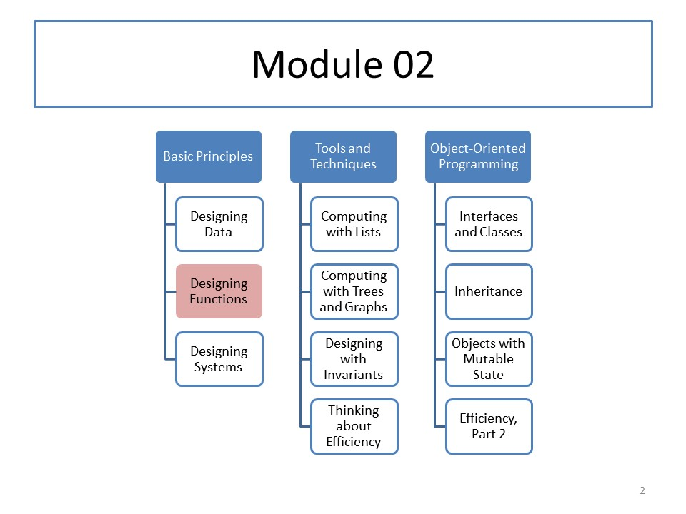

CS 5010: Module 02
Module Overview
Last week was devoted to the Data Design Recipe, which was the first step of the Function Design Recipe. This week we will cover the remainder of the Function Design Recipe. We will talk about Design Strategies, and about our system for testing, including the idea of debugging through testing. Last, we will give you a recipe for reviewing and editing your program before you turn it in.
Course Map
Readings
Read the Prologue and Part I from our textbook, which introduce you to programming in Racket's Basic Student Language, using fixed-size data.
Resources
- As usual, the example programs will be found in the Examples directory.
- 02-4-2-ball-after-mouse-with-tests.rkt is an especially good example for you to study.
- How early testing helps in industry. (Note that early testing is not the same as test-driven design.)
- PDFs of the weekly lessons will be found in the Pdfs section of of this website.
Lessons
- Lesson 2.1 Contracts, Purpose Statements, Examples, and Tests
- Lesson 2.2: Design Strategies
- Lesson 2.3 Examining More than One Value
- Lesson 2.4: Testing
- Lesson 2.5: Program Review
Problem Set